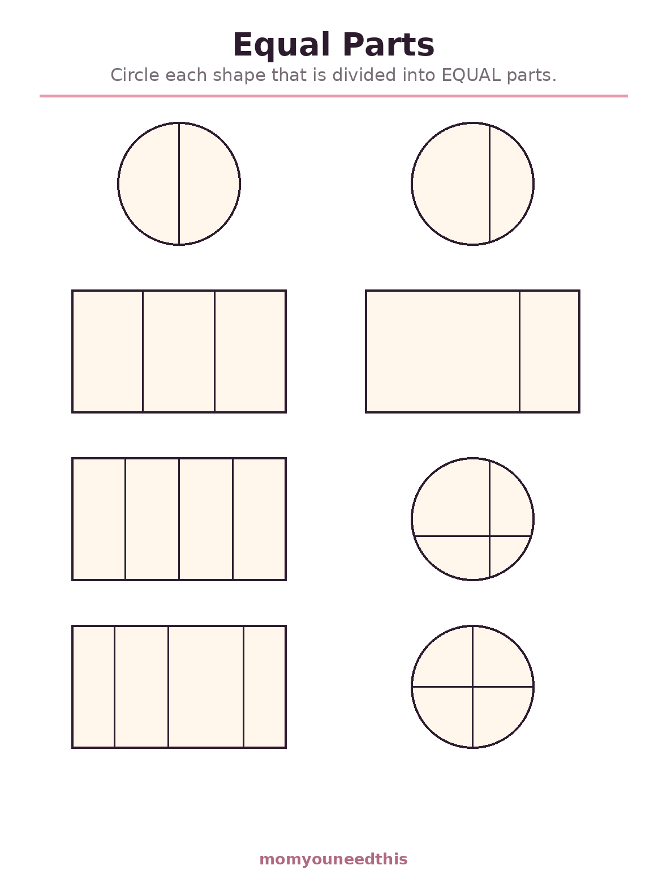
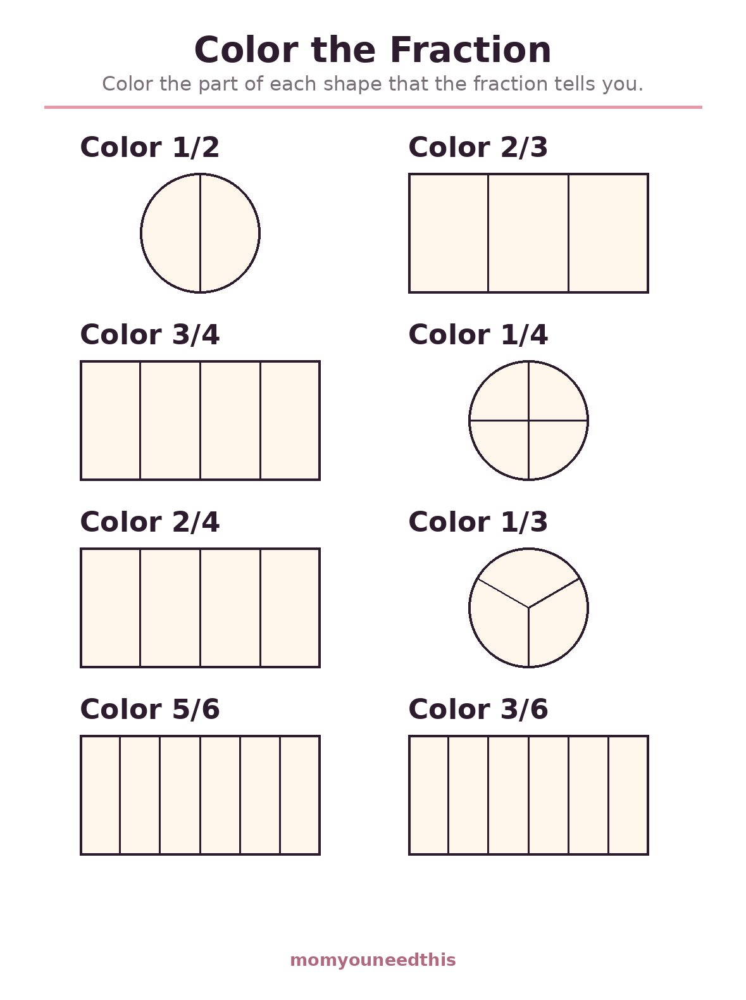
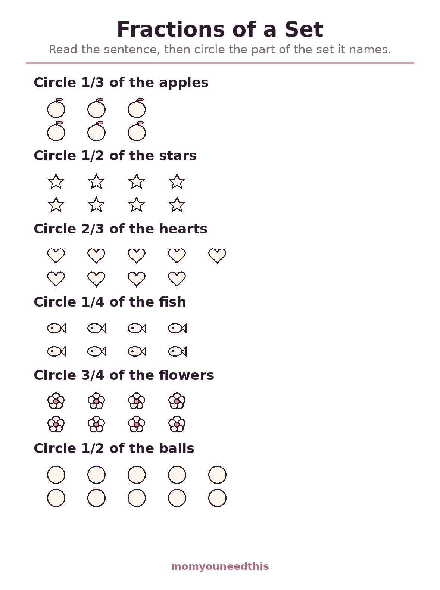
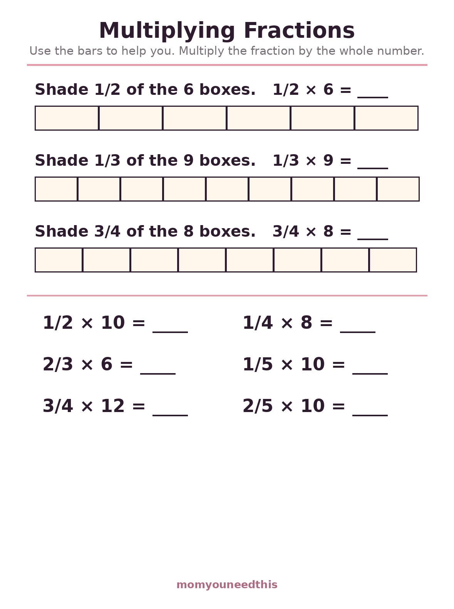

Fractions Worksheets Equal Parts, Fractions of Sets & First Multiplying
These free fractions worksheets introduce parts of a whole the way kids actually learn them: by looking, circling and coloring. Four sheets cover equal parts, coloring a named fraction, fractions of a set, and a gentle first step into multiplying fractions with visual bars. They are made for ages 7 to 9, and nothing is pre-circled or pre-colored — your child makes every decision. Free to print, with no signup.
Last updated: October 21, 2026
Quick Answer
Four free fractions worksheets for ages 7 to 9: Equal Parts (circle the shapes split fairly), Color the Fraction (halves, thirds, fourths and sixths), Fractions of a Set (circle 1/3 of the apples), and Multiplying Fractions (fraction bars plus simple equations like 1/2 × 6). Every shape starts blank, so no answers are shown anywhere.
At a Glance
- Ages: 7–9 (grades 2–4)
- What you get: 4 worksheets — equal parts, color the fraction, fractions of a set, multiplying fractions
- Skills: Fair shares, unit fractions, parts of a group, fractions × whole numbers
- Answers: None — shapes start uncolored and uncircled
- Cost: Free — no signup, no email
⚖️ Equal Parts
Every fraction stands or falls on one idea: the parts must be equal. Eight shapes — circles and rectangles split into halves, thirds and fourths — wait on this sheet, and only some of them are split fairly. Your child's job is to circle the ones divided into truly equal parts. The unfair splits are the real teaching moment: a shape cut into two different-sized pieces has pieces, but it does not have halves.

⚖️ Download Your Free Equal Parts Worksheet
8 shapes — circle the ones split into equal parts
⬇️ Download Free Worksheet 🖨️ Print🎁 Free printable for ages 7–9
🖍️ Color the Fraction
Now the idea turns into action: each shape arrives divided and labeled — color 1/2, color 2/3, color 3/4 — and your child decides which parts to fill in. The sheet mixes halves, thirds, fourths and sixths across circles and rectangles, and every shape starts completely uncolored. Reading the fraction, counting the equal parts, then coloring exactly that many is the whole skill of early fractions performed in one motion.

🖍️ Download Your Free Color the Fraction Worksheet
8 divided shapes labeled 1/2, 2/3, 3/4 and more
⬇️ Download Free Worksheet 🖨️ Print🎁 Free printable for ages 7–9
🍎 Fractions of a Set
Fractions do not only slice pizzas — they describe groups. This sheet shows sets of objects, 6 apples, 8 stars, 9 hearts, 8 fish, and asks for a part of each one: circle 1/3 of the apples, circle 3/4 of the flowers. The mental move is new: first split the set into equal groups, then count out the groups the top number names. It is the bridge between fractions of shapes and fractions of numbers.

🍎 Download Your Free Fractions of a Set Worksheet
6 sets — circle the named part of each
⬇️ Download Free Worksheet 🖨️ Print🎁 Free printable for ages 7–9
✖️ Multiplying Fractions — First Steps
The last sheet is a first taste of the multiplying fractions worksheets older kids meet: three fraction bars make equations like 1/2 × 6 visible — shade half of the 6 boxes and the answer counts itself — followed by six bare equations whose answers are all whole numbers, like 1/4 × 8 and 2/3 × 6. Pictures first and symbols second is what makes this multiplication of fractions worksheets practice feel safe: shade the bar, count what is shaded, then trust the equation.

✖️ Download Your Free Multiplying Fractions Worksheet
3 fraction bars plus 6 equations, whole-number answers
⬇️ Download Free Worksheet 🖨️ Print🎁 Free printable for ages 7–9
🖨️ How to Use These Worksheets
- Start with real food. Before any sheet, cut an apple, a tortilla or a paper plate into halves, then fourths. The word fraction lands differently after small hands have made one.
- Equal parts come first. Do not skip the first sheet because it looks easy. A child who cannot spot an unfair split will build every later fraction skill on sand.
- Let them color and circle. The deciding is the learning. Resist pointing at the right parts; ask instead — how many parts are there, and are they the same size?
- Bars before bare equations. On the multiplying sheet, shade the bars first every time. The picture explains the symbol, and the symbol starts making sense on its own soon after.
🍰 Fractions Live in the Kitchen
More than any other math topic, fractions are already in your child's day. Half a banana at breakfast, a quarter of the pizza at dinner, a third of the ribbon for a craft — the words show up long before the worksheets do. Naming them out loud as you go ("I'm cutting this into four equal parts — that's fourths") builds the vocabulary the sheets then formalize. Cooking together is the richest version: a recipe that makes 12 muffins invites 1/2 × 12 before anyone calls it math, measuring cups turn fourths into something you can pour, and sharing a batch fairly among three siblings is fractions of a set with real stakes and real checking.
🧭 Where Fractions Go Next
Once parts of a whole feel friendly, fractions grow in two directions: comparing them (is 2/3 more than 3/4?) and computing with them, including the multiplying and dividing that upper elementary grades formalize. Both directions lean on times-table fluency more than children expect — finding common denominators and simplifying answers are multiplication facts wearing disguises. If tables are still shaky, the multiplication table 1-12 page firms them up with a full chart and recall practice, and fraction work gets noticeably lighter afterward.
🍕 More Math for Moms & Kids
✖️ Multiplication Table 1-12
The full chart to 12 × 12 plus recall practice — the fluency fractions quietly depend on. See the full table.
✖️ Multiplication Worksheets
Equal groups, arrays and skip counting: where multiplication begins. Start multiplication.
📖 Math Word Problems
One-step stories with adding and taking away — fractions stories come later. Try word problems.
🧒 Older Kids Hub
Every worksheet and practice page for ages 5–8 in one place. Browse Older Kids.
❓ Fractions FAQ
What fractions worksheets are on this page?
Four: Equal Parts, where your child circles the shapes divided fairly; Color the Fraction, with divided shapes labeled 1/2, 2/3, 3/4 and sixths; Fractions of a Set, circling a named part of a group of objects; and Multiplying Fractions, a first-steps sheet with fraction bars and six simple equations.
What age are these fractions worksheets for?
Ages 7 to 9, roughly grades 2 to 4. Equal Parts and Color the Fraction suit children meeting fractions for the first time, while Fractions of a Set and the multiplying sheet fit children who already read fractions confidently and are ready to use them.
Why do the shapes start uncolored and uncircled?
Because deciding is the skill being taught. A sheet with some parts already shaded hands your child the answer's shape before they have thought; a blank divided shape asks the real questions — how many equal parts, and how many of them does the fraction name? Every sheet here starts completely unmarked.
Does my child need times tables for the multiplying sheet?
No. The multiplying sheet is built on shading fraction bars and counting: 1/2 × 6 means shade half of 6 boxes, which gives 3. All six written equations have whole-number answers and can be worked out by drawing a quick bar first — the formal times-table method comes in later grades.
Is there an answer key?
No. Fractions are visual enough to check together at a glance: count the equal parts, count the colored ones, and compare with the fraction written on the sheet. If a colored part's count and the top number disagree, that conversation is the lesson.
Are these fractions worksheets free?
Yes — all four worksheets are free to print at home, with no signup, no account and no email. Print a fresh copy whenever your child wants another round.